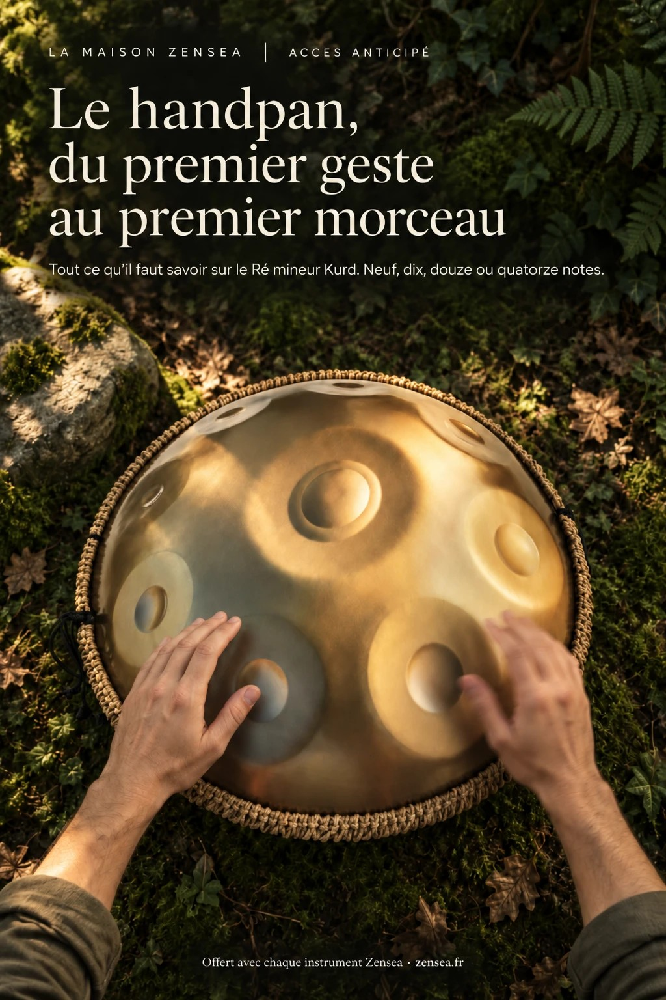

Zensea
Le temple des handpans
Un pavillon de bois au cœur d’une forêt de pins, au soleil couchant. Dix-sept handpans vous y attendent, modelés d’après leurs photos et accordés sur leurs vraies gammes.
Préparation du temple…
Tous nos modèles, d’un coup d’œil
Au clavier : touches 1 à 0, puis − et =. Flèches : modèle précédent ou suivant.
Voir la fiche du produit →
Avec chaque handpan Zensea, notre guide du débutant vous est offert : dix-neuf pages pour apprendre pas à pas, du premier toucher jusqu’à vos premiers morceaux.
Touchez une page pour la lire en grand